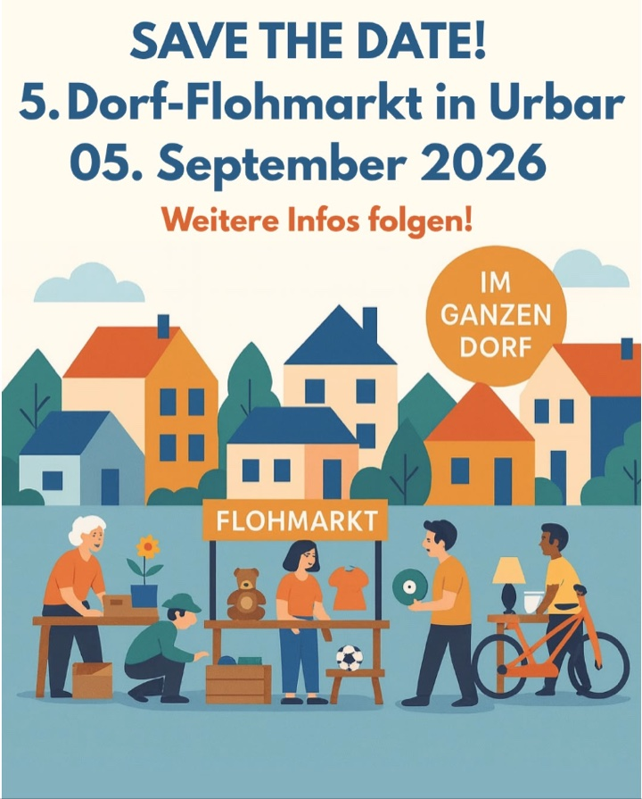

Samstag ist Flohmarkttag
Am 5. September 2026 wird in ganz Urbar gestöbert, entdeckt und gehandelt.
Save the date
Samstag, 5. September 2026
Stöbern, entdecken und miteinander ins Gespräch kommen – mitten in Urbar.

Im ganzen Dorf
Am 5. September 2026 wird in ganz Urbar gestöbert, entdeckt und gehandelt.
Private Höfe und gemeinsame Standorte laden im ganzen Dorf zum Entdecken ein.
Karte öffnen, eigenen Standort anzeigen und bequem den nächsten Stand finden – ohne App und Anmeldung.
Orientierung
Noch keine Stände eingetragen
Standort wird nur nach Ihrer Freigabe bestimmt und nicht gespeichert.